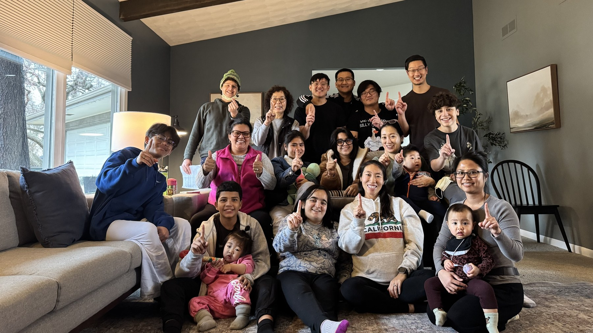

Plan your visit
Everything you need to know before your first Sunday — so nothing about the morning feels unfamiliar.
What to expect
Your first Sunday
Two services begin at ten o’clock, in separate rooms — one in Korean, one in English. Come to whichever you would rather worship in.
There is no dress code — you will see everything from jeans to jackets, and nobody is counting.
A service usually includes singing together, prayer, a reading from the Bible, and a sermon of about thirty minutes. You are welcome to simply listen.
Afterward, at about 11:30, most people stay and eat lunch together. If you would like to meet a pastor, just ask and someone will introduce you.

Getting here
Directions, parking, and transit
- Driving
- The church is on Golf Road, and you turn in directly off it.
- Parking
- There is a free parking lot at the church.
- Public transit
- Pace bus route 208 runs the length of Golf Road, with a stop close to the church. The nearest Metra stop is Cumberland station, on the Union Pacific Northwest line, whose parking lot is reached from East Golf Road.
- Accessibility
- There is a step-free entrance, and accessible restrooms.
Children
Coming with kids
Children are welcome in the service, and we also run classes during the sermon for children from nursery through grade school.
Still have a question?
Send us a note before you come. We would rather answer it now than have you wonder on Sunday.